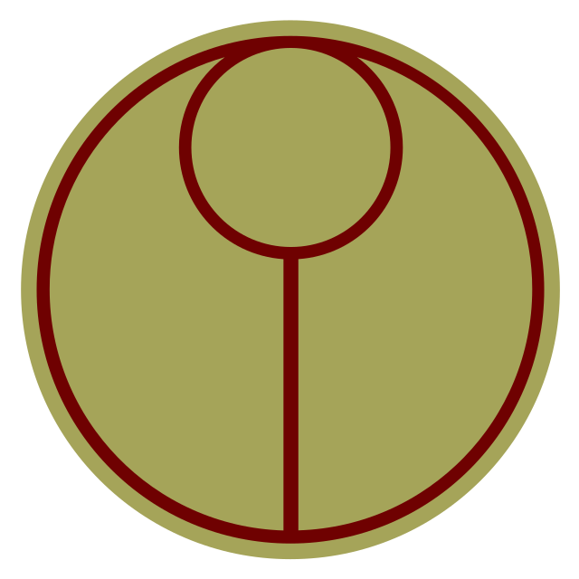

Tau

The Tau (Imperial binomial classification: Tau tau), known in their own language as the T'au, are a young, humanoid and technologically-advanced intelligent species native to the Eastern Fringes of the Milky Way Galaxy who are fighting to expand their interstellar empire and extend a philosophical concept they call the "Greater Good" (Tau'va in the T'au Lexicon) to all the intelligent species of the galaxy.
The T'au claim to be a peaceful race when possible, asking if others will join their cause voluntarily instead of fighting against them. However, if their peaceful overtures are refused, the T'au may well decide to conquer a planet and add it to their growing interstellar empire for the Greater Good, searing the flesh from the bones of anyone who stands against their benign intentions.
Tau society is divided into a number of castes, each responsible for managing a specific aspect of their society. The Tau's central motivating ideal is that everyone in their empire regardless of their species will work for the collective betterment of everyone else, an almost mystical philosophy they call the Greater Good.
The T'au are the central figures of the T'au Empire, an interstellar polity which is composed of several different intelligent species, primarily the Kroot of Pech, the Vespids of the world of Vespid and the nomadic Nicassar.
However, there are now several Human T'au Septs derived from conquered Imperial Humans or Humans who voluntarily joined the T'au Empire because they were impressed by the concept of the Greater Good.
These people are known as Gue'vesa in the T'au Lexicon and they are considered amongst the most vile of Traitors and Heretics within the Imperium of Man.
The T'au are a relatively young race (it has been only 6,000 Terran years since Imperial Inquisitors first noted that the T'au had only just mastered fire and the wheel), and they have evolved rapidly over the past few millennia. Unlike other young intelligent races of the galaxy, the T'au have made remarkable leaps in technology and now represent a real threat to Imperial domination in their region of the galaxy.